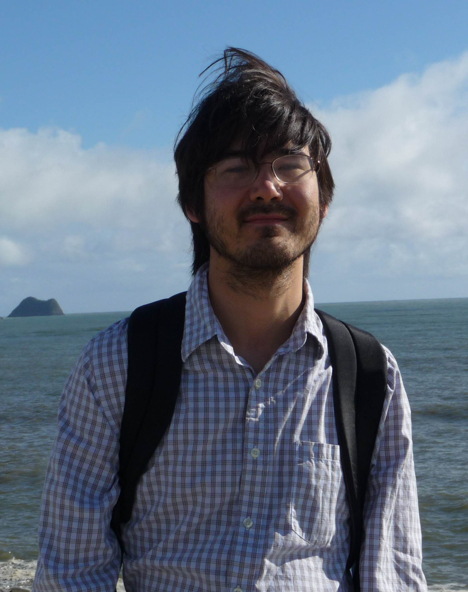

Christopher Hirata's Group Page

Research
Research interests:
Our group works in cosmology -- the study of the structure, composition, and history of the Universe. Modern cosmology seeks to answer fundamental questions
about the Universe -- what is the nature of dark matter? Why is the expansion of the Universe accelerating? And what physical processes and states of matter
existed in the very early Universe?
Like all branches of astrophysics, cosmology works with both theoretical and observational tools. On the theory side, we use cosmological perturbation theory
and numerical simluations to predict the observable consequences of microphysical theories (starting, ideally, from their Lagrangian). The observational
tools include -- but are not limited to -- large surveys of the Universe to make statistical measurements of the distribution of galaxies, the fluctuations
in the cosmic microwave background radiation, the distortions of either imprinted due to gravitational lensing, and spectral lines imprinted on distant
quasars by intervening gas clouds. At the interface between theory and observation, cosmologists apply techniques from computing, data analysis, and
statistics to determine which models remain viable. Our group is a "theory" group in the sense that we don't build hardware. However, in addition to pure
theory and data analysis projects, we dig deeply into understanding observations, modeling instruments, and low-level processing/calibration of data.
Our group's larger research efforts include:
- Cosmology and galaxy astrophysics with weak gravitational lensing: My Ph.D. research focused on learning about galaxy dark matter halos using weak
gravitational lensing in the Sloan Digital Sky Survey (SDSS). [Note that "weak" implies that the lensing does not produce multiple images of a galaxy, but
rather a small perturbation.] With Rachel Mandelbaum, Nikhil Padmanabhan, and other students, we measured scaling relations between halo masses and other
galaxy properties, and used the results to constrain cosmological parameters. Current students are working on related analyses using current survey data
(BOSS and DES).
- The Wide-Field Infrared Survey Telescope (WFIRST): Dark energy is one of the core science programs on the WFIRST space mission, planned for launch
in 2025. WFIRST will measure the tiny signals due to weak gravitational lensing from above the blurring effects of the Earth's atmosphere, and carry out a survey
of distant galaxies using spectral features redshifted into the infrared. Our group has key responsibilities on simulations and requirements development for
the gravitational lensing survey, as well as testing calibration techniques using pre-flight data.
- Modeling the cosmic recombination epoch: Our group has carried out a precise calculation of the recombination of hydrogen and helium in the early
Universe (hundreds of thousands of years after the Big Bang). This is critical to the interpretation of cosmic microwave background observations, since the
recombination epoch is what we "see" when we look at the CMB, and only free electrons (not bound into atoms) contribute to the opacity. This program involved
a great deal of radiative transfer and atomic physics in addition to cosmology.
- Systematic errors in cosmological measurements: In addition to large sample sizes, modern cosmological measurements require exquisite control over
systematic errors -- whether they are on the theory or observational side of the equation. Our group carries out many short research projects assessing
possible sources of systematic errors. Such projects may lead to a short paper if the potential systematic turns out to be small, or open up a new line of
research if they are large or difficult to constrain.
Students and postdocs in our group are encouraged to pursue lines of research in other areas of astrophysics if they find the right opportunity and our group
has the right expertise.
Teaching
Hirata's teaching this year includes:
- Spring 2019: I am teaching two courses:
- Physics 8803 -- an introduction to cosmology for beginning graduate students
- Astronomy 7810 -- order-of-magnitude astrophysics (co-taught with David Weinberg)
- Fall 2018: Astronomy 8823 -- atomic and radiative processes in astrophysics (core graduate course)
- Fall 2017/Spring 2018: Physics 7701/7401 -- electrodynamics and mathematical methods (core graduate course)
- Fall 2016/Spring 2017: Physics 7701/7401 -- electrodynamics and mathematical methods (core graduate course)
Contact information:
Christopher Hirata
Physics Department, The Ohio State University
191 W Woodruff Ave
Columbus, Ohio 43210
Office: The Ohio State University, Physics Research Building, M2010
hirata.10@osu.edu
Last updated: Dec. 23, 2018